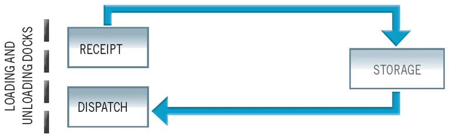

Inventory Management
Misc
- Goal: develop a replenishment policy that will minimize your ordering, holding and shortage costs.
- OUT level policy is widely recommended as a replenishment policy
- Costs (Also see EOQ, DIM >> DI Components)
- Ordering Costs ($ per order): Fixed cost to place an order due to administrative costs, system maintenance or manufacturing costs
- Also see
- Holding Costs ($ per unit per unit of time): All the costs required to hold your inventory (storage, insurance, and capital costs)
- Forecast PI widths serve as a proxy for inventory holding costs and provides valuable input for setting a target service level
- Shortage/Stock-out Costs ($ per unit): The costs of not having enough inventory to meet the customer demand (Lost Sales, Penalty)
- Ordering Costs ($ per order): Fixed cost to place an order due to administrative costs, system maintenance or manufacturing costs
- Packages
- {planr} - Uses opening inventory, sales forecasts and supply variables to calculate projected inventory and projected coverage calculations (article)
- Question: “Due to the complexity/cost of maintaining inventory management system. Would it be sufficient to just set a safety stock level and replenish once the SKU dips below that level?”
- The more products you handle, the more an inventory management system matters. If you have 1000s or 10s of 1000s of different products, it makes a large difference whether you do demand forecasting along with implementing the Order-Up-To Level Policy, etc.
- Variables of interest that need to be forecasted for various decisions
- Stock/No Stock - Should we continue to stock a product or discontinue the product and just let the current stock dwindle to zero.
- Mean of Demand
- Replenishment - How much product should we restock
- Mean and Variance of Demand
- Forecasts in conjunction with a hypothesized demand distribution (parametric) vs build-up of the empircal distribution via bootstrapping (non-parametric)
- Returns - Customer returning products
- Net Demand which is equal to Demand - Returns
- Can be forecasted itself or by forecasting Demand and Returns separately.
- Net Demand which is equal to Demand - Returns
- Last Time Buy (LTB) - the supplier’s “last call” for a part or component. The final chance an enterprise will have to buy the part before the supplier stops producing it.
- Rate of Demand Decline
- Stock/No Stock - Should we continue to stock a product or discontinue the product and just let the current stock dwindle to zero.
Terms
Active References - A product may have multiple SKUs. All SKUs would be needed in order to calculate stats for that product. The active reference for a product is one SKU that encompasses all other SKUs.
- e.g. Last season’s dress “C” has been replaced by the new dress “D”. Even though both dresses are identical, they have different SKUs. Dress D’s SKU will be the active reference. Therefore, if the retailer sold two units of C in the past and three units of D this week, Nextail will show D having sold five units.
- Also seen this term used when referring to all unique SKUs on an order sheet as the total active references.
Fill rate (aka Fulfillment Rate)- The percentage of orders that you can ship from your available stock without any lost sales, backorders, or stockouts.
.png)
\[ \text{Fill Rate} = \frac{\text{Total Orders Shipped}}{\text{Total Orders Placed}} \cdot 100 \]
- On average, companies typically maintain a fill rate of about 85%-95%. But ideally, you should strive for a fill rate between 97% and 99%.
Fulfillment Rate - See Fill Rate
Lead Time (aka performance cycle) - Time required between the creation of a replenishment order and the effective store replenishment
Linked Lines (aka Silent Switches) - Refers to when several products in a retailer’s inventory are commercially equivalent. In other words, when identical products are identified by multiple SKUs.
- Example: Continuity products are ordered over multiple seasons or years or when large orders are split among different suppliers
Order Components

- Order: The “shopping basket” full of items you’ve just purchased.
- Lines: The different products within your order, recognized by warehouses as each individual Stock Keeping Unit (SKU) or Universal Product Code (UPC) number.
- Units: The quantity of each line.
Performance Cycle - See Lead Time
Reference - ID for a product (e.g. SKU)
Replenishment cycle - Cycle between replenishment (i.e. restocking) orders
Rotations - Speed at which products enter and exit the warehouse
- High Rotation: Units enter and exit continuously. These items are in high demand.
- Medium Rotation: Units enter and exit in smaller volumes than those in High Rotation.
- Low Rotation: These are the items that spend the most time in the warehouse, and are in low demand.
Safety stock - Extra inventory held by a retailer or a manufacturer in case demand increases unexpectedly. This means it’s additional stock above the desired inventory level that you would usually hold for day-to-day operations.
(Cycle) Service Level (Z) - The probability that the amount of inventory on hand during the lead time is sufficient to meet expected demand – that is, the probability that a stockout will not occur.
- Also see figure in Fill Rate
Shrink Rate - The lost inventory as a percentage of sales. The metric is the gap between products retailers physically have on-hand at stores and warehouses during an inventory check (usually once or twice a year) and what they purchased.
- Customer and employee theft drive roughly two-thirds of shrink, retailers estimate, on top of damaged or spoiled products, administrative errors, vendor fraud, and other factors. (source)
Silent Switches - See Linked Lines
SKU - Stock Keeping Unit - Usually a bar code that has all the information to distinguish it from another product. These attributes can include manufacturer, description, material, size, color, packaging, and warranty terms. When a business takes inventory of its stock, it counts the quantity it has of each SKU.
Stock Outs - Out of stock events
Supply Chain - A network of processes and stock locations built to deliver services and goods to customers.
Wastage - Where supply greatly outstrips demand, and the product expires
S&OP - Sales & Operations Planning
Safety Stock (aka Buffer Stock)
Misc
- Notes from Article
- Calculation of Safety Stock can be more useful than trying to improve forecast accuracy for intermittent(or sporadic) product time series (lotsa zeros).
Reasons for Safety Stock
- Demand Uncertainty - Every retailer and manufacturer will have products that sell well all year round and products that fluctuate in demand.
- Lead time Uncetrainty - Deliveries arriving earlier or later than expected, a safety stock formula will help you to cover unexpected delays and demand fluctuation to maintain a consistent output.
- The lead time is usually a distribution and not a constant, so it needs to be recorded in order to get a sample standard deviation thats used the safety stock formula
- Factors:
- Deciding what to order or produce
- Approval time
- Submitting a purchase requisition
- Emailing vendors
- Manufacturing and processing of the product
- Delivery time from vendor
- Incoming inspection time
- Time it takes to put on the shelf
- Any additional time required to return to the start of the next cycle
Stockouts
- Safety stock determinations are not intended to eliminate all stockouts — just the majority of them Usually caused by:
- Changes in consumer demand
- Incorrect stock forecasts
- Variability in lead times for raw materials
- Costs Due to Stockouts
- Loss of revenue
- Loss of gross profit
- Loss of customers
- Reduced market share
- Poor efficiency
- Strained supplier and retailer relationships
(Cycle) Service level (Z)
- Higher service level \(\rightarrow\) more safety stock
- Independently choose a service level for groups of products based things such as strategic importance, profit margin, or dollar volume.
- The retail industry aims to maintain a typical service level of between 90% and 95% depending on the product
- Example:
.png)
- At 95 percent service level, expect:
- (D1) for 50 percent of replenishment cycles, not all cycle stock will be depleted and safety stock will not be needed
- (D2) for 45 percent of replenishment cycles, the safety stock will suffice.
- (D3) and for 5 percent of replenishment cycles, expect a stockout.
- Kind of a confusing diagram but I think the y-axis is total stock and x-axis represents time (kinda sorta)
- Stock dwindles as product is sold as the cycle ends, then stock is replenished after an order and begins to dwindle again.
- At 95 percent service level, expect:
Safety Stock Equations
When the demand interval doesn’t equal lead time interval
Used to mitigate demand variability and lead time variability (σLT see next formula) is very small or zero
\[ \text{Safety Stock} = Z \cdot \sigma_D \cdot \sqrt{\frac{PC}{T_I}} \]
- \(Z\): z-score of the service level (1-sided, upper-tail)
- e.g. 95% service level \(\rightarrow\) Z = 1.64; 90% service level \(\rightarrow\) Z = 1.28
qnorm(0.95)= 1.644854,qnorm(0.90)= 1.281552
- \(PC\): Performance Cycle, another term for total lead time
- \(T_I\): Time increment used for calculating standard deviation of demand
- \(\sigma_D\): Standard Deviation of Demand.
- \(Z\): z-score of the service level (1-sided, upper-tail)
Example: if the standard deviation of demand is calculated from weekly demand data and the total lead time including review period is three weeks.
- \(PC\) = 21 days (3 weeks)
- \(T_I\) = 7 days (weekly data)
- Safety Stock = Z * √3 * σD
Example: Desired service level = 95%; seven-day manufacturing time and the one day needed to arrive at the warehouse; Standard deviation of weekly demand = 10 rolls
- Safety stock = 1.64 * √[8/7] * 10 rolls
- Safety stock = 18 rolls
- Safety stock = 1.64 * √[8/7] * 10 rolls
When the lead time varies and demand variability (σD see previous formula) is very small or zero
\[ \text{Safety Stock} = Z \cdot \sigma_{LT} \cdot D_{\text{avg}} \]
- \(Z\): z-score of the service level (1-sided, upper-tail)
- e.g. 95% service level \(\rightarrow\) Z = 1.64; 90% service level \(\rightarrow\) Z = 1.28
qnorm(0.95)= 1.644854,qnorm(0.90)= 1.281552
- \(\sigma_{LT}\): Standard Deviation of the Lead Time
- \(D_{\text{avg}}\): Demand Forecast
- Depends what the frequency of the series is, but you want an estimate of the total demand between orders
- Example: If orders are made monthly and you forecast weekly sales, then your horizon is likely monthly and you sum around 4 weeks of point estimates to get D.
- \(Z\): z-score of the service level (1-sided, upper-tail)
When both demand variability and lead time variability are present
Demand and lead time variability are independent
\[ \text{Safety Stock} = Z \cdot \sqrt{\frac{\sigma_D^2 PC}{T_I} + (\sigma_{LT}D_{\text{avg}})^2} \]
Demand and lead time variability are not independent
\[ \text{Safety Stock} = \left(Z \cdot \sigma_D \cdot\sqrt{\frac{PC}{T_I}}\;\right) + (Z \cdot \sigma_{LT} \cdot D_{\text{avg}}) \]
Demand variability is the dominant influence on safety stock requirements.
- With the recognition of what factors dominate an equation, it becomes easier to focus improvement efforts
Issues
- Sometimes recommended safety stock volumes are larger than business leaders are comfortable having
- Alternative or Supplement: Order Expediting
- Reduce safety stock volume by keeping small amounts of expensive products and rely on air freight to cover peaks in demand. The cost of shipping a small percentage of total demand via air can be minimal compared to the cost of carrying large amounts of safety stock of the valuable material on an ongoing basis.
- Alternative or Supplement: Make-to-Order (MTO) or Finish-to-Order (FTO) production environment
- If lead times allow, MTO eliminates the need for most safety stock. Meanwhile, FTO allows for less differentiation in safety stock than finished-product inventory, which lowers demand variability and reduces safety stock requirements.
- FTO and MTO also are well suited for situations where customers are willing to accept longer lead times for highly sporadic purchases.
- Alternative or Supplement: Order Expediting
Economic Order Quantity (EOQ)
AKA Wilson Formula
\[ Q = \sqrt{\frac{2DS}{H}} \]
- \(Q\): EOQ units (i.e. quantity of product to be ordered)
- \(D\): Demand in units (Typicall on an annual basis)
- \(S\): Order Cost (per Purchase Order)
- \(H\): Holding Costs (per unit, per year)
The ideal order quantity a company should purchase to minimize inventory costs such as holding costs, shortage costs, and order costs
- Usually used for purchase ordering (not production)
- Assumes demand, ordering, and holding costs remain constant over time
Goal: minimize the cost of ordering and holding stock, while still meeting demand and service level requirements
Costs of Ordering
- Placing your order
- Delivery
- Transportation
- Receiving the order
Costs of Holding Stock
- Paying for stock in advance
- Warehousing
- Storage
- Depreciation
Order-Up-To (OUT) Level Policy
.png)
- Time intervals (i.e. Review Interval) trigger a replenishment, not reorder points
- Length depends on the industry
- Examples
- Manufacturing: 1 month
- Retail: 1 week
- Misc
- Notes from
- CMAF FFT: Intermittent Demand Forecasting (Video)
- From authors of “Intermittent Demand Forecasting. Context, Methods and Applications” (see your book shelf)
- Should have more details on OUT replenishment model
- From authors of “Intermittent Demand Forecasting. Context, Methods and Applications” (see your book shelf)
- UT-Dallas “Basestock Model CH. 13” Slides
- Based on Cachon & Terwiesch book, “Matching Supply with Demand” (link)
- CMAF FFT: Intermittent Demand Forecasting (Video)
- Notes from
- Inventory Position (IP) = Stock-on-Hand - backorders + On-Order-Inventory
- After every Review Interval, the OUT gets optimized according to Replenishment variables
- Mean and Variance of Demand are estimated
- Forecasts in conjunction with a hypothesized demand distribution (parametric) vs build-up of the empircal distribution via bootstrapping (non-parametric)
- Given updated variables, place order that raises IP to OUT level (S)
- Protection Interval is period that you should have enough inventory to cover.
- The forecast horizon which equals the Review Interval + Lead Time
- Evaluate service at each level of an order: orders, lines, units.
- Lines (SKU Level)
- Whether to use Cycle Service Level (CSL) or Fill Rate (ReadyRate (?) is also a possibility)
- CSL - probability of not going out of stock - not realistic but easy to calculate
- Fill Rate measures true service offered to customers, but more involved in its application
- Also see Safety Stock for more details on CSL and Fill Rate
- Whether to use Cycle Service Level (CSL) or Fill Rate (ReadyRate (?) is also a possibility)
- Lines (SKU Level)
Reorder Point
- The reorder point is the threshold amount of inventory at which you need place an replenishment order
- once an item’s stock falls below PAR level, an optimised order quantity is generated
- Components used to determine a reorder point
- Safety Stock
- Reorder Point Formula
- Periodic Automatic Replacement (PAR)
- Reorder Point = Safety Stock + (Davg × Lead time)
Warehouse Management
- Misc
- Picking operations account for the largest proportion of the total warehouse costs (up to more than 60%). This is why the design of these areas is of such importance.
- The closer the high demand or large goods are to the loading and unloading docks, the lower the handling costs.
- Material Flow Types
- Simple Flows: To understand how these movements work, we can examine the simplest possible flow, which takes place when units sent by the supplier are used, without dividing these up.
 - Medium flows: Movements start to become more complex with this type of flow. It is normally found in warehouses with single or combined picking operations, generally with the supply of full pallets.

- Complex Flows: There are warehouses with different working areas, depending on the types of product and their consumption. They normally have intermediate handling areas and can require various operations that in turn need flows of a certain (and at times great) complexity. This diagram shows an example of this type of facility and the loading movements that occur there.

- Simple Flows: To understand how these movements work, we can examine the simplest possible flow, which takes place when units sent by the supplier are used, without dividing these up.
- Warehouse Optimization


- A: High Rotation, B: Medium Rotation, C: Low Rotation
- (Top) Pareto Plot shows how High Rotation products are classified as those accounting for 20% of total products but also 80% of sales (point on the curve)
- (Bottom) Shows how the “A” products have been positioned closest to the loading and unloading area.
{kind=link}